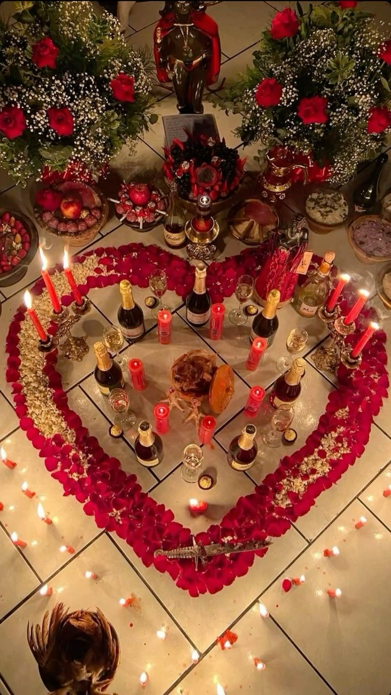
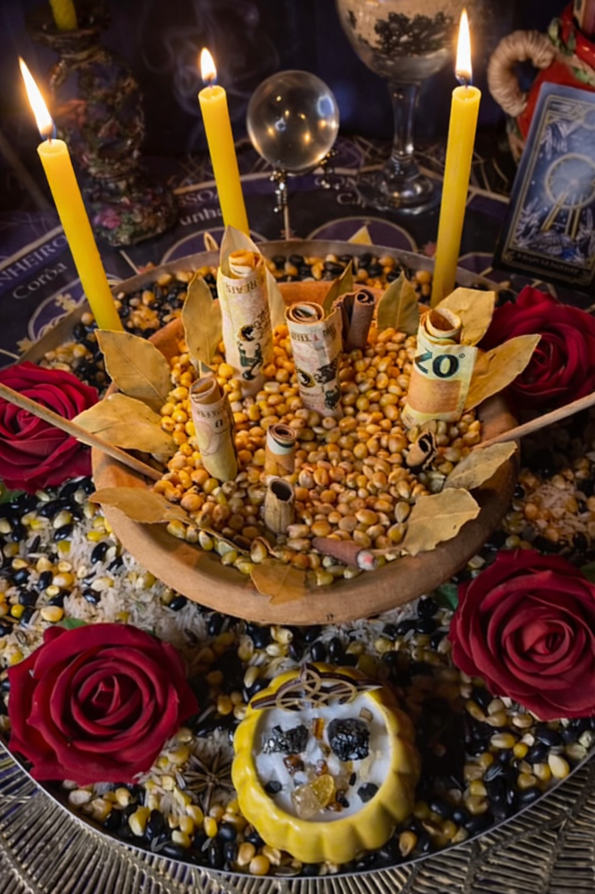
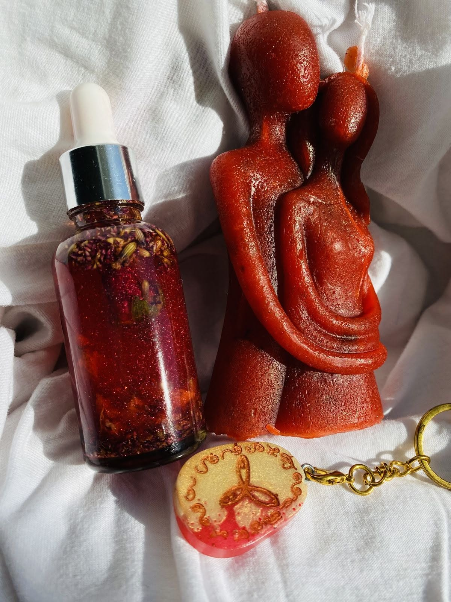

Ritual de amor
Trabajo ceremonial para abrir camino y sostener la intención amorosa.
Guía mística privada
Si tu pareja se alejó o hay distancia, somos brujos y curanderos con experiencia en brujeria de amor, hechizos de amor y rituales efectivos para atraer, reconciliar y lograr el regreso de pareja. Te damos una lectura inicial clara y te orientamos en el siguiente paso.

Trabajo ceremonial para abrir camino y sostener la intención amorosa.

Apoyo para unir, endulzar y fortalecer el vínculo sentimental.

Trabajo enfocado en volver a acercar, sanar distancia y reactivar el contacto.
Si tu pareja se alejó, hacemos amarre de amor y trabajos de brujeria para que vuelva a buscarte y retome la relación.
Si hay enojo, bloqueo o silencio, aplicamos hechizos de amor y rituales efectivos para suavizar sentimientos y abrir comunicación.
Si hay otra persona interfiriendo, revisamos el caso y hacemos el trabajo necesario para apartarla.
No estás aquí para leer teoría. Estás aquí porque necesitas una solución para tu relación, para recuperar a alguien o para volver a tener contacto. Si buscaste brujos cerca de mi, brujos near me, curanderos cerca de mí o curandero en tu ciudad, así como espiritistas o santeria, aquí recibes orientación directa. También atendemos a quien busca un brujo o brujos consulta gratis y consulta de brujos gratis inicial.
Consulta inicial por mensaje
Respuesta clara y directaAmarres de amor consulta gratis por WhatsApp.
Solicitar ayudaSi buscas brujos, brujo o brujeria de amor, aquí encuentras guía clara y directa. Somos brujos y curanderos con experiencia en amarres de amor y rituales efectivos.
Atendemos brujos consulta gratis, consulta de brujos gratis y brujeria consulta gratis. También ofrecemos amarres de amor consulta gratis y consulta de amarres gratis para evaluar tu caso.
Si escribiste brujos cerca de mi, brujos near me, curanderos cerca de mí o curandero en tu ciudad, te respondemos rápido y sin rodeos.
Trabajamos amarre de amor, amarres amorosos y amarres de amor efectivos para el regreso de pareja, reconciliación y endulzamiento.
Realizamos hechizos de amor, hechizo de amor y rituales de amor con enfoque en resultados reales. También aplicamos conjuros y rituales cuando el caso lo requiere.
Si buscas santeria, espiritistas o un centro espiritual, aquí obtienes orientación privada y trabajo serio. Todo por WhatsApp.
Video adicional
Este video queda al final como apoyo visual para reforzar la propuesta de ayuda sentimental y cerrar la página con una pieza más inmersiva.
Comentarios
52 comentarios
Me respondieron rápido y me explicaron qué trabajo encajaba con mi caso.